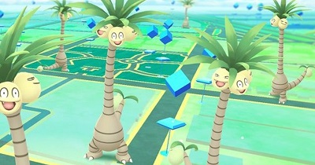
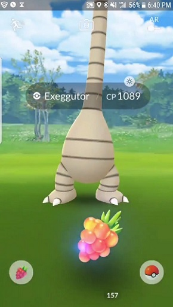
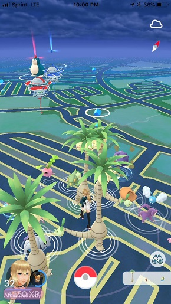
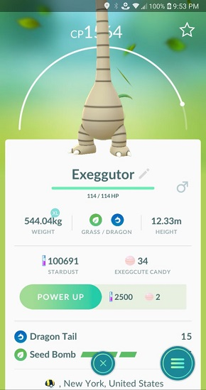
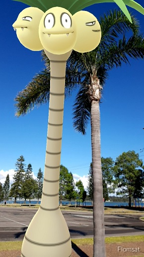

Pokémon GO! ya está liberando de forma oficial las formas Alola de sus criaturas, comenzando con Exeggutor

El día de ayer, entre tantas noticias y emociones, los jugadores fieles de Pokemon GO! se dieron cuenta de que una notificación llegó a su móvil. Se trataba del anuncio oficial de Niantic, avisando que las formas de Alola, ya estaban siendo liberadas, y para comenzar con esta fase del juego, recibiríamos el verano con un Exeggutor con su característica forma alargada y su tipo dragón incluido.
Pero este pokémon no nos seria regalado y ya, este tiene que ser buscado, aunque tampoco es una tarea muy difícil, ya que apareció por todo el mundo, y ahora, estamos seguros de que todos los jugadores ya cuentan con su propio Exeggutor forma Alola.
Y para hacer honor a los memes de este gracioso Pokémon, ni siquiera cabe en la pantalla del móvil (sin importar que tan alargada sea la pantalla de tu smartphone). Es necesario activar la RA del juego para voltear hacia arriba y lograr ver el rostro de Exeggutor.

Una filtración publicada hace poco informaba de las criaturas con forma de Alola que llegaría al videojuego próximamente. Entre ellas destacaban Rattata, Raichu, Sandshrew, Vulpix, Ninetales, Diglett, Meowth, Persian, Geodude, Golem, Grimer, Muk, Exeggutor o Marowak, entre muchas otras.
Por ahora tendremos que conformarnos con el gracioso diseño de Exeggutor, y prepararnos para seguramente verlo en muchos gimnasios. Aquí están algunas imágenes que te darán ganas de desempolvar tu cuenta de Pokémon GO! y salir a buscar uno de estos alargados monstruos de bolsillo.



Por ultimo, como uno de sus muchos anuncios la noche de ayer, a través de un comunicado en Pokémon GO!, se nos informó que una vez disponibles los títulos Pokémon Let's GO! Pikachu / Let's GO! Eevee, podremos utilizar nuestros Pokémon con forma Alola dentro de la consola híbrida, Nintendo Switch.